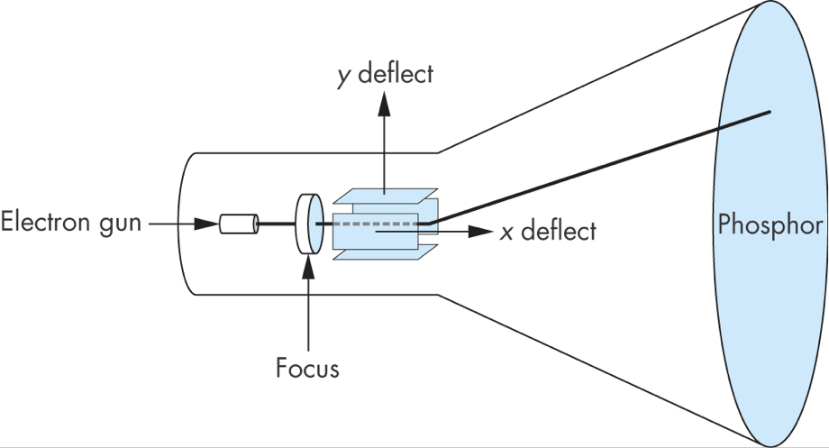
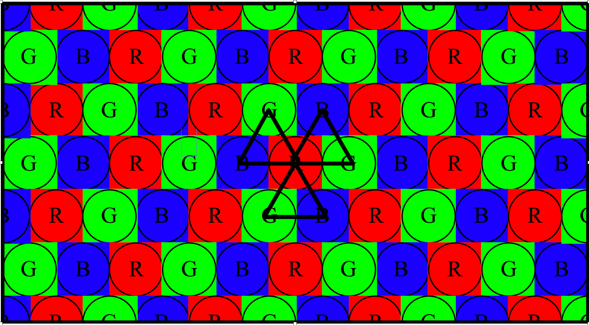
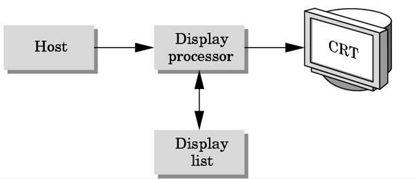
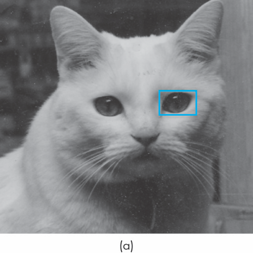
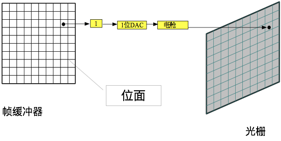
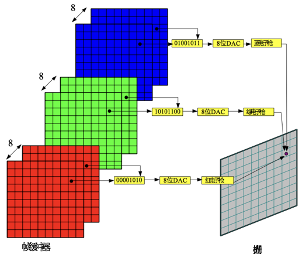
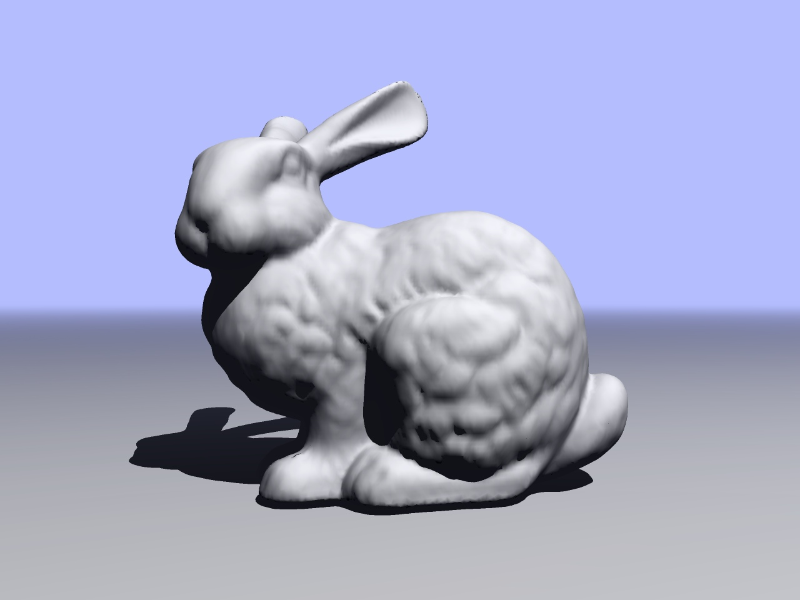
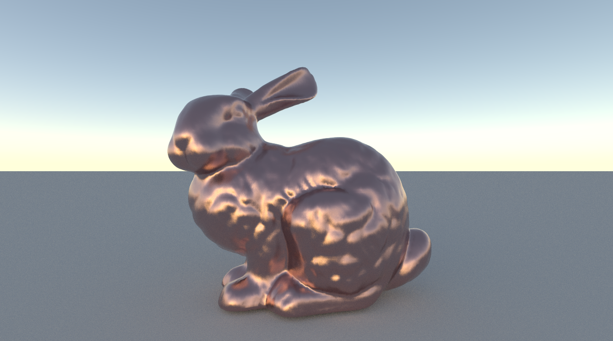
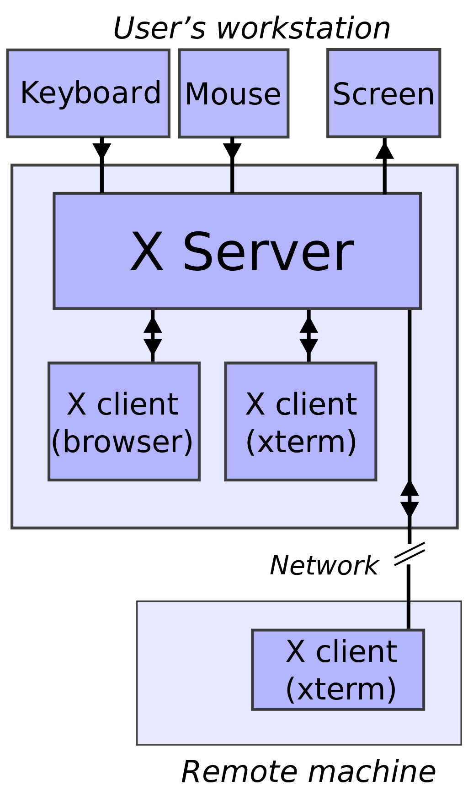

计算机图形学
第一章 图形系统和模型(2)
计算机图形学发展史
李懿
医学技术与信息工程学院
浙江中医药大学
计算机图形学发展史
1950-1960年代
- 计算机图形学的发展是伴随着计算技术的发展而发展, 在计算机技术发展的早期就已开始
- 当时的计算机运算速度慢, 价格昂贵, 可靠性也不高
计算机图形学发展史
CRT显示器
长期以来，阴极射线管(
计算机图形学发展史
荫罩CRT

计算机图形学发展史
1960-1970年代
- 以线框模型表示物体对象
- 绘图板出现
- 显示处理核心
计算机图形学发展史
线框模型

计算机图形学发展史
绘图板
其发明人Ivan Sutherland在其博士论文中已然认识到人机交互具有巨大的潜力，其人也是图形学中众多通用算法的发明人，也是第一次提出了虚拟现实技术的原型概念，被称为“虚拟现实之父”，其代表作品是SketchPad
计算机图形学发展史
显示处理核心
显示处理核心(Display Processor, DPU)，是一种专门用于刷新显示的计算机
图形存储在DPU上的显示文件中，由另一台主机对显示文件进行编译后再传给DPU
计算机图形学发展史
1970-1980年代
- 光栅图形学
- 图形学标准
- 工作站和PC
计算机图形学发展史
光栅图形学
所有的图像都是由帧缓存器中的像素数组(光栅)构成

计算机图形学发展史
光栅图形学
可通过填充线框模型中的多边形生成图像

计算机图形学发展史
光栅图形学

逐行扫描显示
计算机图形学发展史
光栅图形学

逐行扫描显示三角形示例
计算机图形学发展史
光栅图形学
一个位面生成单色图像

计算机图形学发展史
光栅图形学
八个位面生成灰度图像

计算机图形学发展史
光栅图形学
二十四个位面生成彩色图像
计算机图形学发展史
图形学标准
图形核心系统(Graphics Kernel System, GKS)，最初是一个二维图形软件标准，1988年，其扩充GKS3D被批准为三维图形软件标准
计算机图形学发展史
工作站和PC
最初的工作站, 是指的有网络连接的, 客户端-服务器模式
最初的PC, 帧缓存是作为内存的一部分，可改变其内容，生成相应图像
计算机图形学发展史
1980-1990年代
- 真实感图形学
- 专门的图形硬件
- 工业标准
- 网络化图形系统
- 人机界面
计算机图形学发展史
真实感图形学
 计算机图形学发展史
专门的图形硬件
Silicon图形几何硬件，采用超大规模集成电路设计实现了图形流水线
计算机图形学发展史
工业标准
1986年ISO公布了程序员级的分层结构交互图形系统(Programmer's Hierarchical Interactive System, PHIGS), 这是对GKS的扩展，增加了对象建模, 彩色设定, 表面绘制和图形管理等功能
计算机图形学发展史
网络化图形系统
X Window System
计算机图形学发展史
人机界面
图形用户界面(Graphical User Interface, GUI)

计算机图形学发展史
1990-2000年代
- OpenGL API开始出现
- 计算机动画电影《玩具总动员》获得成功
- 新硬件计算能力, 包括纹理映射, 纹理混合, accumulation buffer, stencil buffer等
计算机图形学发展史
2000-2010年代
- 照片级真实感
- 显卡市场竞争激烈, Nvidia VS ATI
- 游戏机市场发展
- 计算机图形学工具应用于影视产业, 如Maya, LightWave等
- 可编程流水线硬件
- 新显示技术层出不穷, 如新显示技术(LCD, LED等), 各种三维成像手段, 各种新成像设备等
计算机图形学发展史
2011年至今
- 图形计算普适化，以各种移动设备为代表
- 新的硬件，新的体系，新的架构
- OpenGL ES和WebGL技术出现
- VR, AR, MR等概念趋向流行
- 3D电影、电视、交互技术、短视频等
- 与人工智能、深度学习等融合更为紧密
- KhronosGroup